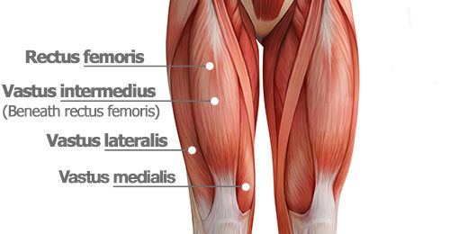

About the leg muscles
Quadriceps Femoris
Source 
Vastus Lateralis
The vastus lateralis (/ˈvæstəs ˌlætəˈreɪlɪs, ˈræ-/), also called the ''vastus externus''[citation needed] is the largest and most powerful part of the quadriceps femoris, a muscle in the thigh. Together with other muscles of the quadriceps group, it serves to extend the knee joint, moving the lower leg forward. It arises from a series of flat, broad tendons attached to the femur, and attaches to the outer border of the patella. It ultimately joins with the other muscles that make up the quadriceps in the quadriceps tendon, which travels over the knee to connect to the tibia. The vastus lateralis is the recommended site for intramuscular injection in infants less than 7 months old and those unable to walk, with loss of muscular tone.
Source
Vastus Intermedius
The vastus intermedius (/ˈvæstəs ˌɪntərˈmiːdiəs/) (Cruraeus) arises from the front and lateral surfaces of the body of the femur in its upper two-thirds, sitting under the rectus femoris muscle and from the lower part of the lateral intermuscular septum. Its fibers end in a superficial aponeurosis, which forms the deep part of the quadriceps femoris tendon.
The vastus medialis and vastus intermedius appear to be inseparably united, but when the rectus femoris has been reflected during dissection a narrow interval will be observed extending upward from the medial border of the patella between the two muscles, and the separation may be continued as far as the lower part of the intertrochanteric line, where, however, the two muscles are frequently continuous.
Due to being the deeper middle-most of the quadriceps muscle group, the intermedius is the most difficult to stretch once maximum knee flexion is attained. It cannot be further stretched by hip extension as the rectus femoris can, nor is it accessible to manipulate with massage therapy to stretch the fibres sideways as the vastus lateralis and vastus medialis are.
Source
Vastus Medialis
The vastus medialis (vastus internus or teardrop muscle) is an extensor muscle located medially in the thigh that extends the knee. The vastus medialis is part of the quadriceps muscle group.
The vastus medialis is one of four muscles in the anterior compartment of the thigh.[1] It is involved in knee extension, along with the other muscles which make up the quadriceps muscle.[1] The vastus medialis also contributes to correct tracking of the patella.
A division of the vastus medialis muscle into two groups of fibers has been hypothesized, a long and relatively inline group of fibres with the quadriceps ligament, the vastus medialis longus; and a shorter and more obliquely oriented with group of fibres, the vastus medialis obliquus. There is as yet insufficient evidence to conclusively confirm or deny this hypothesis. Source
Rectus Femoris
The rectus femoris muscle is one of the four quadriceps muscles of the human body. The others are the vastus medialis, the vastus intermedius (deep to the rectus femoris), and the vastus lateralis. All four parts of the quadriceps muscle attach to the patella (knee cap) by the quadriceps tendon.
The rectus femoris is situated in the middle of the front of the thigh; it is fusiform in shape, and its superficial fibers are arranged in a bipenniform manner, the deep fibers running straight (Latin: rectus) down to the deep aponeurosis. Its functions are to flex the thigh at the hip joint and to extend the leg at the knee joint.[1]
The rectus femoris, sartorius, and iliopsoas are the flexors of the thigh at the hip. The rectus femoris is a weaker hip flexor when the knee is extended because it is already shortened and thus suffers from active insufficiency; the action will recruit more iliacus, psoas major, tensor fasciae latae, and the remaining hip flexors than it will the rectus femoris.
Similarly, the rectus femoris is not dominant in knee extension when the hip is flexed since it is already shortened and thus suffers from active insufficiency. In essence: the action of extending the knee from a seated position is primarily driven by the vastus lateralis, vastus medialis, and vastus intermedius, and less by the rectus femoris.
In the other extreme, the muscle's ability to flex the hip and extend the knee can be compromised in a position of full hip extension and knee flexion, due to passive insufficiency.
The rectus femoris is a direct antagonist to the hamstrings, at the hip and at the knee.
Source
Sartorius
The sartorius muscle (/sɑːrˈtɔːriəs/) is the longest muscle in the human body.[2] It is a long, thin, superficial muscle that runs down the length of the thigh in the anterior compartment.
The name Sartorius comes from the Latin word sartor, meaning tailor,[4] and it is sometimes called the tailor's muscle.[3] This name was chosen in reference to the cross-legged position in which tailors once sat.[3] In French, a muscle name itself "couturier" comes from this specific position which is referred to as "sitting as a tailor" (in French: "s'asseoir en tailleur"). There are other hypotheses as to the origin of the name. One is that it refers to the location of the inferior portion of the muscle being the "inseam" or area of the inner thigh that tailors commonly measure when fitting trousers. Another is that the muscle closely resembles a tailor's ribbon. Additionally, antique sewing machines required continuous crossbody pedaling. This combination of lateral rotation and flexion of the hip and flexion of the knee gave tailors particularly developed sartorius muscles.
The sartorius muscle can move the hip joint and the knee joint, but all of its actions are weak, making it a synergist muscle. At the hip, it can flex, weakly abduct, and laterally rotate the thigh. At the knee, it can flex the leg; when the knee is flexed, sartorius medially rotates the leg.[3][1] Turning the foot to look at the sole or sitting cross-legged demonstrates all four actions of the sartorius.
Source
Pectineus
The pectineus muscle (/pɛkˈtɪniəs/, from the Latin word pecten, meaning comb[1]) is a flat, quadrangular muscle, situated at the anterior (front) part of the upper and medial (inner) aspect of the thigh. The pectineus muscle is the most anterior adductor of the hip. The muscle does adduct and internally rotate the thigh but its primary function is hip flexion.
It can be classified in the medial compartment of thigh[2] (when the function is emphasized) or the anterior compartment of thigh (when the nerve is emphasized).It is one of the muscles primarily responsible for hip flexion. It also adducts the thigh.
Source
Biceps Femoris
The biceps femoris (/ˈbaɪsɛps ˈfɛmərɪs/) is a muscle of the thigh located to the posterior, or back. As its name implies, it has two parts, one of which (the long head) forms part of the hamstrings muscle group.
Both heads of the biceps femoris perform knee flexion. Since the long head originates in the pelvis it is also involved in hip extension.[5] The long head of the biceps femoris is a weaker knee flexor when the hip is extended (because of active insufficiency). For the same reason the long head is a weaker hip extender when the knee is flexed. When the knee is semi-flexed, the biceps femoris in consequence of its oblique direction rotates the leg slightly outward.
Source
Semitendinosus
The semitendinosus (/ˌsɛmiˌtɛndɪˈnoʊsəs/) is a long superficial muscle in the back of the thigh. It is so named because it has a very long tendon of insertion. It lies posteromedially in the thigh, superficial to the semimembranosus.
The semitendinosus muscle is one of three hamstring muscles that are located at the back of the thigh. The other two are the semimembranosus muscle and the biceps femoris. The semitendinosus muscle lies between the other two. These three muscles work collectively to flex the knee and extend the hip. The muscle also helps to medially rotate the tibia on the femur when the knee is flexed and medially rotate the femur when the hip is extended. It counteracts forward bending at the hips as well.
Source
Semimembranosus
The semimembranosus (/ˌsɛmiˌmɛmbrəˈnoʊsəs/) is the most medial of the three hamstring muscles. It is so named because it has a flat tendon of origin. It lies posteromedially in the thigh, deep to the semitendinosus.
The semimembranosus helps to extend (straighten) the hip joint and flex (bend) the knee joint. It also helps to medially rotate the knee: the tibia medially rotates on the femur when the knee is flexed. It medially rotates the femur when the hip is extended. The muscle can also aid in counteracting the forward bending at the hip joint.
Source
Exercises
Stretches
- Standing Quad Stretch
- Stand with your side to the wall, placing a hand on the wall for balance.
- Hold your outside foot with your outside hand and lift the foot up toward your rear end, keeping your thighs and knees together.
- You should feel a gentle to moderate stretch in the front of the thigh.
- Hold for a cycle of relaxation breathing, then do the same for the other foot.
- Hamstring/Calf Stretch
- Place your right foot in front of you.
- Hinge at the waist to lean your torso forward toward the extended right leg, and bend your supporting knee.
- Slowly flex your right ankle so that your toes are pulling up toward your body.
- Hold for a cycle of relaxation breathing and then repeat with the left foot.
- Inner Thigh Stretch
- Stand with a very wide stance.
- Bend your right knee as you shift your entire body right until you feel a stretch in your left inner thigh.
- Hold for a cycle of relaxation breathing, then shift your weight to the other side and repeat with the left leg.
- Supine Leg Stretch
- Lie on your back with your knees bent and your feet flat on the floor.
- Bend one knee and hug it into your body.
- Slowly kick that leg up toward the ceiling, straightening it and pulling it toward the torso until tension is felt behind the leg.
- Point and flex the foot 3 times and perform 3 ankle circles in each direction.
- Lower the leg and repeat with the opposite leg.
Injuries
Minor leg injuries are common. Symptoms often develop from everyday wear and tear, overuse, or an injury. Leg injuries are most likely to occur during: Sports or recreational activities, Work-related tasks, Work or projects around the home. Most leg injuries in children and teens occur during sports or play or from accidental falls. The risk for injury is higher in contact sports, such as wrestling, football, or soccer, and in high-speed sports, such as biking, in-line skating, skiing, snowboarding, and skateboarding. Knees, ankles, and feet are the most affected body areas. Any injury occurring at the end of a long bone near a joint may injure the growth plate and needs to be checked by a doctor.
Older adults have a higher risk for injuries and fractures because they lose muscle mass and bone strength (osteoporosis) as they age. They also have more problems with vision and balance, which increases their risk for accidental injury. Most minor injuries will heal on their own, and home treatment is usually all that is needed to relieve symptoms and promote healing.
Source